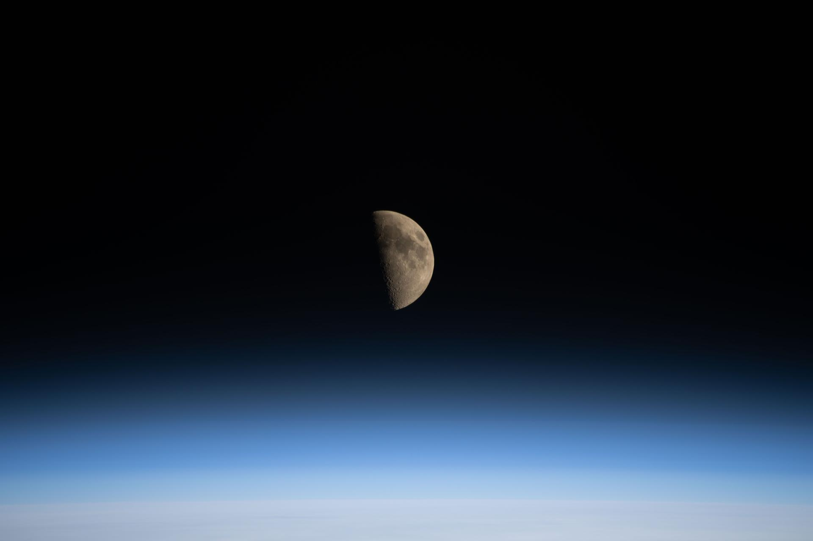

<!DOCTYPE html>
<html lang="en">
<head>
  <meta charset="UTF-8">
  <meta name="viewport" content="width=device-width, initial-scale=1.0">
  <title>OrbitSense Div C — Science Olympiad Remote Sensing Master Hub</title>
  <link rel="stylesheet" href="style.css">
  <link rel="preconnect" href="https://fonts.googleapis.com">
  <link rel="preconnect" href="https://fonts.gstatic.com" crossorigin>
  <link href="https://fonts.googleapis.com/css2?family=Inter:wght@400;500;600;700;800&family=JetBrains+Mono:wght@400;500;600;700&display=swap" rel="stylesheet">
</head>
<body>

  <!-- ================= TOP NAVIGATION BAR ================= -->
  <header class="top-navbar">
    <div class="nav-container">
      <div class="brand" onclick="switchTab('diagnostic')">
        <div class="brand-icon-wrap">
          <svg viewBox="0 0 24 24">
            <circle cx="12" cy="12" r="4"></circle>
            <path d="M12 2a15.3 15.3 0 0 1 4 10 15.3 15.3 0 0 1-4 10 15.3 15.3 0 0 1-4-10 15.3 15.3 0 0 1 4-10z"></path>
            <path d="M2 12h20"></path>
          </svg>
        </div>
        <div class="brand-text">
          <h1>OrbitSense <span class="brand-badge">Div C</span></h1>
          <p>Science Olympiad Remote Sensing Master Hub</p>
        </div>
      </div>

      <!-- Main Navigation Tabs -->
      <nav class="nav-tabs" id="main-nav-tabs">
        <button class="nav-tab-btn active" data-tab="diagnostic" onclick="switchTab('diagnostic')">
          📊 Diagnostic Audit
        </button>
        <button class="nav-tab-btn" data-tab="guided" onclick="switchTab('guided')">
          🧭 Guided Learning
          <span class="badge-count" id="guided-badge-count">12</span>
        </button>
        <button class="nav-tab-btn" data-tab="atlas" onclick="switchTab('atlas')">
          📸 Sensor & Graph Atlas
        </button>
        <button class="nav-tab-btn" data-tab="satellites" onclick="switchTab('satellites')">
          🛰️ Satellites Library
          <span class="badge-count">18</span>
        </button>
        <button class="nav-tab-btn" data-tab="climate" onclick="switchTab('climate')">
          🌍 Climate Stuff
        </button>
        <button class="nav-tab-btn" data-tab="math-calc" onclick="switchTab('math-calc')">
          🧮 Math & Calculator Vault
        </button>
        <button class="nav-tab-btn" data-tab="exam" onclick="switchTab('exam')">
          📝 Practice Exam
        </button>
        <button class="nav-tab-btn" data-tab="cheat-sheet" onclick="switchTab('cheat-sheet')">
          🖨️ Binder Cheat Sheet
        </button>
      </nav>

      <div class="nav-actions">
        <button class="btn-print-nav" onclick="openDownloadModal()" style="background: rgba(56, 189, 248, 0.15); border-color: rgba(56, 189, 248, 0.4); color: var(--cyan);">
          <svg width="14" height="14" viewBox="0 0 24 24" fill="none" stroke="currentColor" stroke-width="2">
            <path d="M21 15v4a2 2 0 0 1-2 2H5a2 2 0 0 1-2-2v-4"></path>
            <polyline points="7 10 12 15 17 10"></polyline>
            <line x1="12" y1="15" x2="12" y2="3"></line>
          </svg>
          Download Package (.zip)
        </button>
        <button class="btn-print-nav" onclick="printCheatSheet()">
          <svg width="14" height="14" viewBox="0 0 24 24" fill="none" stroke="currentColor" stroke-width="2">
            <polyline points="6 9 6 2 18 2 18 9"></polyline>
            <path d="M6 18H4a2 2 0 0 1-2-2v-5a2 2 0 0 1 2-2h16a2 2 0 0 1 2 2v5a2 2 0 0 1-2 2h-2"></path>
            <rect x="6" y="14" width="12" height="8"></rect>
          </svg>
          Print Notes
        </button>
      </div>
    </div>
  </header>

  <!-- ================= MAIN CONTENT CONTAINER ================= -->
  <main class="main-wrapper">

    <!-- ================= SECTION 1: DIAGNOSTIC AUDIT ================= -->
    <section class="app-section active" id="section-diagnostic">
      <div class="section-hero">
        <span class="hero-tag">Step 1 • Current State Determination</span>
        <h2 class="hero-title">Remote Sensing Division C Baseline Diagnostic Audit</h2>
        <p class="hero-desc">
          Take this 16-question diagnostic covering the 4 foundational pillars of Division C Remote Sensing: 
          <strong>Satellites & Sensors</strong>, <strong>Climate Processes</strong>, <strong>EMR Physics & Spectroscopy</strong>, and <strong>Quantitative Calculations</strong>. 
          OrbitSense will profile your current state and construct an adaptive guided study track targeting your exact weaknesses.
        </p>
        <div style="margin-top: 18px; display: flex; gap: 12px; align-items: center; flex-wrap: wrap;">
          <button class="btn btn-primary" onclick="skipToGuidedLearning()">
            🚀 Skip All Questions & Go Straight to Learning ➔
          </button>
          <span style="font-size: 13px; color: var(--text-muted);">
            or take the diagnostic below to test your baseline state
          </span>
        </div>
      </div>

      <!-- Diagnostic In-Progress Card -->
      <div class="diagnostic-container" id="diagnostic-quiz-container">
        <div class="diagnostic-progress-bar">
          <div class="diagnostic-progress-fill" id="diag-progress-fill"></div>
        </div>

        <div class="diagnostic-question-card">
          <div class="question-meta">
            <span class="q-number-pill" id="diag-q-number">Question 1 of 16</span>
            <span class="q-category-pill" id="diag-q-category">Satellites & Sensors</span>
            <span class="badge badge-cyan" id="diag-q-topic">A-Train Constellation</span>
          </div>

          <h3 class="q-prompt" id="diag-q-prompt">Loading question...</h3>

          <div class="options-list" id="diag-options-list">
            <!-- Dynamically populated options -->
          </div>

          <!-- Feedback Box -->
          <div class="feedback-box" id="diag-feedback-box">
            <div class="feedback-title" id="diag-feedback-title">Correct!</div>
            <p class="feedback-text" id="diag-feedback-text">Detailed explanation here.</p>
            <div class="feedback-tip" id="diag-feedback-tip">Competition Tip: ...</div>
          </div>

          <div style="margin-top: 24px; display: flex; justify-content: space-between; align-items: center; flex-wrap: wrap; gap: 12px;">
            <button class="btn btn-secondary btn-sm" onclick="skipToGuidedLearning()" style="color: var(--cyan); border-color: rgba(56, 189, 248, 0.4);">
              ⏭️ Skip Diagnostic & Learn Directly ➔
            </button>
            <div style="display: flex; gap: 10px;">
              <button class="btn btn-secondary btn-sm" id="diag-btn-hint" onclick="toggleDiagHint()">💡 Show Tip</button>
              <button class="btn btn-primary" id="diag-btn-next" onclick="nextDiagQuestion()" disabled>Next Question →</button>
            </div>
          </div>
        </div>
      </div>

      <!-- Diagnostic Results Screen (Hidden initially) -->
      <div class="results-card" id="diagnostic-results-container" style="display: none;">
        <div class="state-badge-container">
          <div class="state-badge-icon" id="diag-result-icon">🎯</div>
          <div>
            <div class="state-title" id="diag-result-tier">State Contender (Tier 2)</div>
            <div class="state-score-big" id="diag-result-score">Overall Score: 13 / 16 (81%)</div>
            <p class="state-desc" id="diag-result-desc">
              Strong grasp of satellite orbits and atmospheric physics. Focus recommended on 1-Layer Energy Balance models and radar altimetry.
            </p>
          </div>
        </div>

        <h3 style="font-size: 16px; font-weight: 700; margin-bottom: 14px; color: #fff;">📊 Category Mastery Breakdown</h3>
        <div class="mastery-bars-grid">
          <div class="mastery-bar-item">
            <div class="mastery-label-wrap">
              <span>🛰️ Satellites & Sensors</span>
              <span id="mastery-sat-pct">75%</span>
            </div>
            <div class="mastery-progress-track">
              <div class="mastery-progress-bar" id="mastery-sat-bar" style="background: var(--cyan); width: 75%;"></div>
            </div>
          </div>

          <div class="mastery-bar-item">
            <div class="mastery-label-wrap">
              <span>🌍 Climate Processes</span>
              <span id="mastery-clim-pct">100%</span>
            </div>
            <div class="mastery-progress-track">
              <div class="mastery-progress-bar" id="mastery-clim-bar" style="background: var(--emerald); width: 100%;"></div>
            </div>
          </div>

          <div class="mastery-bar-item">
            <div class="mastery-label-wrap">
              <span>⚛️ EMR Physics & Spectroscopy</span>
              <span id="mastery-phys-pct">75%</span>
            </div>
            <div class="mastery-progress-track">
              <div class="mastery-progress-bar" id="mastery-phys-bar" style="background: var(--purple); width: 75%;"></div>
            </div>
          </div>

          <div class="mastery-bar-item">
            <div class="mastery-label-wrap">
              <span>🧮 Math & Quantitative Calculations</span>
              <span id="mastery-math-pct">50%</span>
            </div>
            <div class="mastery-progress-track">
              <div class="mastery-progress-bar" id="mastery-math-bar" style="background: var(--amber); width: 50%;"></div>
            </div>
          </div>
        </div>

        <div class="blindspots-card">
          <div class="blindspots-title">
            <span>⚠️ Identified Knowledge Gaps to Master</span>
          </div>
          <ul class="blindspots-list" id="diag-blindspots-list">
            <!-- Dynamically populated blindspots -->
          </ul>
        </div>

        <div style="display: flex; gap: 14px; flex-wrap: wrap;">
          <button class="btn btn-primary" onclick="launchTargetedGuidedMode()">
            🚀 Start Adaptive Guided Study for My Weak Areas
          </button>
          <button class="btn btn-secondary" onclick="restartDiagnostic()">
            🔄 Retake Diagnostic Audit
          </button>
          <button class="btn btn-secondary" onclick="switchTab('satellites')">
            🛰️ Explore Satellites Library
          </button>
        </div>
      </div>
    </section>

    <!-- ================= SECTION 2: ADAPTIVE GUIDED LEARNING ================= -->
    <section class="app-section" id="section-guided">
      <div class="section-hero">
        <span class="hero-tag">Step 2 • Adaptive Mastery</span>
        <h2 class="hero-title">Adaptive Guided Learning Mode</h2>
        <p class="hero-desc">
          Bite-sized micro-lessons engineered for Science Olympiad Division C. Each module provides 
          <strong>Core Takeaways</strong>, <strong>Interactive Simulation Sandboxes</strong>, 
          <strong>Competition Trap Alerts</strong>, <strong>Step-by-Step Calculator Examples</strong>, and 
          <strong>Check-for-Understanding Micro-Quizzes</strong>.
        </p>
      </div>

      <!-- Filter Controls & Actions -->
      <div style="display: flex; justify-content: space-between; align-items: center; flex-wrap: wrap; gap: 12px; margin-bottom: 20px;">
        <div class="guided-filter-tabs" style="margin-bottom: 0;">
          <button class="filter-chip active" data-filter="all" onclick="filterGuidedModules('all', this)">All Modules (12)</button>
          <button class="filter-chip" data-filter="weakness" id="guided-weakness-btn" onclick="filterGuidedModules('weakness', this)">🎯 My Diagnostic Weaknesses</button>
          <button class="filter-chip" data-filter="Satellites & Sensors" onclick="filterGuidedModules('Satellites & Sensors', this)">🛰️ Satellites & Sensors</button>
          <button class="filter-chip" data-filter="Climate Processes" onclick="filterGuidedModules('Climate Processes', this)">🌍 Climate Processes</button>
          <button class="filter-chip" data-filter="Math & Calculations" onclick="filterGuidedModules('Math & Calculations', this)">🧮 Math & Formulas</button>
        </div>
        <div style="display: flex; gap: 8px;">
          <button class="btn btn-secondary btn-sm" onclick="expandAllModules()">📖 Expand All</button>
          <button class="btn btn-secondary btn-sm" onclick="collapseAllModules()">📕 Collapse All</button>
        </div>
      </div>

      <!-- Modules Container -->
      <div id="guided-modules-container">
        <!-- Rendered dynamically by app.js -->
      </div>
    </section>

    
    <!-- ================= SECTION 2.5: SENSOR & GRAPH ATLAS ================= -->
    <section class="app-section" id="section-atlas">
      <div class="section-hero">
        <span class="hero-tag">Visual Recognition & Image Sheet Guide</span>
        <h2 class="hero-title">Satellite Sensor & Data Product Atlas</h2>
        <p class="hero-desc">
          Science Olympiad Division C exams provide an Image Sheet containing raw instrument spectrograms, 
          lidar curtains, radar reflectivity profiles, false-color composites, and climate anomaly maps. 
          Study what each tool looks like, its absorption spectra, measurement units, and exact recognition cues.
        </p>
      </div>

      <!-- Atlas Subtabs -->
      <div class="atlas-subtabs">
        <button class="atlas-subtab-btn active" onclick="switchAtlasSubtab('spectra', this)">🌈 Atmospheric Absorption Spectra</button>
        <button class="atlas-subtab-btn" onclick="switchAtlasSubtab('oco2', this)">🔬 OCO-2 Spectrometer</button>
        <button class="atlas-subtab-btn" onclick="switchAtlasSubtab('caliop', this)">🛰️ CALIPSO Lidar Curtains</button>
        <button class="atlas-subtab-btn" onclick="switchAtlasSubtab('cloudsat', this)">📡 CloudSat Radar Profiles</button>
        <button class="atlas-subtab-btn" onclick="switchAtlasSubtab('landsat', this)">🌿 Landsat CIR & Spectral Curves</button>
        <button class="atlas-subtab-btn" onclick="switchAtlasSubtab('altimetry', this)">🌊 Jason Altimetry & ENSO</button>
        <button class="atlas-subtab-btn" onclick="switchAtlasSubtab('ceres', this)">☀️ CERES Radiation Budget</button>
        <button class="atlas-subtab-btn" onclick="switchAtlasSubtab('quiz', this)" style="color: var(--amber);">🎮 Visual Recognition Trainer</button>
      </div>

      <!-- SUBTAB 1: ATMOSPHERIC ABSORPTION SPECTRA -->
      <div class="atlas-content" id="atlas-content-spectra">
        <div class="atlas-card">
          <div class="atlas-header">
            <div>
              <h3 class="atlas-title">🌈 Earth's Atmospheric Absorption Spectrum & Optical Windows</h3>
              <p class="atlas-subtitle">Plot of Atmospheric Transmittance (%) vs Wavelength (µm) from Ultraviolet to Thermal Infrared</p>
            </div>
            <span class="badge badge-cyan">Spectroscopy Foundation</span>
          </div>

          <p style="font-size: 13.5px; color: var(--text-muted); line-height: 1.6;">
            Earth's atmosphere acts as a selective filter. Nitrogen (N₂) and Oxygen (O₂) are transparent in the infrared, 
            while polyatomic greenhouse gases absorb radiation at discrete molecular vibrational/rotational lines. 
            Notice the prominent <strong>8 µm to 12 µm Atmospheric Window</strong> where Earth radiates surface heat directly to space!
          </p>

          <div class="atlas-svg-wrap">
            <svg viewBox="0 0 900 360" fill="none" xmlns="http://www.w3.org/2000/svg">
              <!-- Background Grid -->
              <rect width="900" height="360" fill="#0b111e"/>
              <line x1="80" y1="50" x2="860" y2="50" stroke="#1e2c44" stroke-dasharray="4 4"/>
              <line x1="80" y1="120" x2="860" y2="120" stroke="#1e2c44" stroke-dasharray="4 4"/>
              <line x1="80" y1="190" x2="860" y2="190" stroke="#1e2c44" stroke-dasharray="4 4"/>
              <line x1="80" y1="260" x2="860" y2="260" stroke="#1e2c44" stroke-dasharray="4 4"/>
              
              <!-- Axes -->
              <line x1="80" y1="290" x2="860" y2="290" stroke="#475569" stroke-width="2"/>
              <line x1="80" y1="50" x2="80" y2="290" stroke="#475569" stroke-width="2"/>

              <!-- Y-Axis Labels -->
              <text x="70" y="55" fill="#94a3b8" font-size="11" text-anchor="end" font-family="monospace">100%</text>
              <text x="70" y="125" fill="#94a3b8" font-size="11" text-anchor="end" font-family="monospace">75%</text>
              <text x="70" y="195" fill="#94a3b8" font-size="11" text-anchor="end" font-family="monospace">50%</text>
              <text x="70" y="265" fill="#94a3b8" font-size="11" text-anchor="end" font-family="monospace">25%</text>
              <text x="70" y="295" fill="#94a3b8" font-size="11" text-anchor="end" font-family="monospace">0%</text>
              <text x="25" y="170" fill="#38bdf8" font-size="12" font-weight="700" transform="rotate(-90 25 170)" text-anchor="middle">Atmospheric Transmittance</text>

              <!-- X-Axis Labels (Wavelength µm) -->
              <text x="100" y="315" fill="#94a3b8" font-size="11" text-anchor="middle" font-family="monospace">0.2 µm (UV)</text>
              <text x="180" y="315" fill="#94a3b8" font-size="11" text-anchor="middle" font-family="monospace">0.5 (Vis)</text>
              <text x="260" y="315" fill="#94a3b8" font-size="11" text-anchor="middle" font-family="monospace">1.0 (NIR)</text>
              <text x="360" y="315" fill="#94a3b8" font-size="11" text-anchor="middle" font-family="monospace">2.0 (SWIR)</text>
              <text x="470" y="315" fill="#94a3b8" font-size="11" text-anchor="middle" font-family="monospace">4.26 (CO₂)</text>
              <text x="560" y="315" fill="#94a3b8" font-size="11" text-anchor="middle" font-family="monospace">7.66 (CH₄)</text>
              <text x="650" y="315" fill="#34d399" font-size="11" font-weight="700" text-anchor="middle" font-family="monospace">8 - 12 µm Window</text>
              <text x="780" y="315" fill="#f43f5e" font-size="11" font-weight="700" text-anchor="middle" font-family="monospace">15 µm (CO₂)</text>
              <text x="850" y="315" fill="#94a3b8" font-size="11" text-anchor="middle" font-family="monospace">>20 µm</text>
              <text x="470" y="345" fill="#e2e8f0" font-size="12" font-weight="700" text-anchor="middle">Wavelength λ (micrometers, µm)</text>

              <!-- Atmospheric Window Bracket Highlight (8 to 12 µm) -->
              <rect x="600" y="55" width="105" height="235" fill="rgba(52, 211, 153, 0.08)" stroke="#34d399" stroke-dasharray="4 4"/>
              <text x="652" y="75" fill="#34d399" font-size="11" font-weight="700" text-anchor="middle">ATMOSPHERIC WINDOW</text>
              <text x="652" y="90" fill="#34d399" font-size="9.5" text-anchor="middle">High Transmittance (8-12 µm)</text>

              <!-- Transmittance Curve (Polygon + Stroke) -->
              <path d="M 80 290 
                       L 110 290 
                       Q 130 290 145 100 
                       L 180 60 
                       L 210 65 
                       L 230 180 
                       L 245 80 
                       L 260 270 
                       L 280 85 
                       L 310 285 
                       L 330 90 
                       L 360 280 
                       L 400 95 
                       L 440 100 
                       L 470 288 
                       L 490 110 
                       L 530 120 
                       L 560 275 
                       L 580 140 
                       L 610 70 
                       L 630 170 
                       L 650 70 
                       L 690 80 
                       L 730 285 
                       L 780 290 
                       L 820 285 
                       L 860 288" 
                    fill="none" stroke="#38bdf8" stroke-width="3" stroke-linecap="round" stroke-linejoin="round"/>

              <!-- Absorption Notch Markers & Molecular Tags -->
              <!-- UV Ozone -->
              <rect x="85" y="250" width="35" height="20" rx="3" fill="#f43f5e"/>
              <text x="102" y="264" fill="#fff" font-size="10" font-weight="700" text-anchor="middle">O₃/O₂</text>

              <!-- Water Vapor 1.4 µm -->
              <text x="260" y="250" fill="#60a5fa" font-size="10" font-weight="700" text-anchor="middle">H₂O</text>
              <!-- Water Vapor 1.9 µm -->
              <text x="310" y="265" fill="#60a5fa" font-size="10" font-weight="700" text-anchor="middle">H₂O</text>
              <!-- CO2 4.26 µm -->
              <rect x="455" y="250" width="30" height="18" rx="3" fill="#a855f7"/>
              <text x="470" y="263" fill="#fff" font-size="9" font-weight="700" text-anchor="middle">CO₂</text>
              <!-- CH4 7.66 µm -->
              <rect x="545" y="240" width="30" height="18" rx="3" fill="#fbbf24"/>
              <text x="560" y="253" fill="#000" font-size="9" font-weight="700" text-anchor="middle">CH₄</text>
              <!-- Ozone 9.6 µm inside window -->
              <rect x="618" y="145" width="24" height="16" rx="3" fill="#f43f5e"/>
              <text x="630" y="157" fill="#fff" font-size="8.5" font-weight="700" text-anchor="middle">O₃</text>
              <!-- CO2 15 µm massive notch -->
              <rect x="745" y="250" width="70" height="20" rx="4" fill="#f43f5e"/>
              <text x="780" y="264" fill="#fff" font-size="10.5" font-weight="800" text-anchor="middle">CO₂ (15 µm)</text>
            </svg>
          </div>

          <div class="recognition-cue-box">
            <div class="cue-title">🎯 Test Recognition Cues for Atmospheric Spectra:</div>
            <ul class="cue-list">
              <li><strong>The 8–12 µm Window:</strong> Look for the wide gap of high transmittance (~80%) centered between the 7.66 µm methane dip and the huge 15 µm CO₂ valley. The small notch inside the window at <strong>9.6 µm</strong> is caused by <strong>stratospheric ozone (O₃)</strong>!</li>
              <li><strong>CO₂ Fundamental Bands:</strong> Always identify <strong>4.26 µm</strong> (asymmetric stretch) and the broad <strong>15 µm</strong> notch (bending mode). AIRS on Aqua and CrIS on Suomi NPP use these bands for atmospheric temperature sounding.</li>
              <li><strong>Water Vapor ($H_2O$) Notches:</strong> Recurring absorption dips at 0.94 µm, 1.13 µm, 1.4 µm, 1.9 µm, 6.3 µm, and continuous absorption beyond 15 µm.</li>
            </ul>
          </div>
          <div style="margin-top: 16px; background: rgba(0,0,0,0.3); border-radius: 8px; padding: 14px; border: 1px solid var(--border-dim);">
            <div style="font-size: 11px; text-transform: uppercase; letter-spacing: 0.05em; color: var(--cyan); margin-bottom: 8px; font-weight: 700;">🛰️ NASA Reference Diagram: Atmospheric Gas Absorption Spectra</div>
            
          </div>
        </div>
      </div>

      <!-- SUBTAB 2: OCO-2 SPECTROMETER DATA -->
      <div class="atlas-content" id="atlas-content-oco2" style="display: none;">
        <div class="atlas-card">
          <div class="atlas-header">
            <div>
              <h3 class="atlas-title">🔬 NASA OCO-2 Grating Spectrometer Output</h3>
              <p class="atlas-subtitle">High-Resolution Spectral Triplet (O₂ A-Band, Weak CO₂, Strong CO₂) & Global XCO₂ Map</p>
            </div>
            <span class="badge badge-emerald">A-Train • Carbon Cycle</span>
          </div>

          <p style="font-size: 13.5px; color: var(--text-muted); line-height: 1.6;">
            OCO-2 carries three high-resolution grating spectrometers that record hundreds of finely spaced spectral absorption lines 
            of reflected sunlight. Below is the iconic <strong>Three-Band Spectrogram</strong> that appears on national exams:
          </p>

          <div class="atlas-svg-wrap">
            <svg viewBox="0 0 900 280" fill="none" xmlns="http://www.w3.org/2000/svg">
              <rect width="900" height="280" fill="#090f19" rx="8"/>
              
              <!-- Panel 1: O2 A-band -->
              <rect x="20" y="20" width="270" height="200" fill="#0f172a" stroke="#1e2c44" rx="6"/>
              <text x="155" y="45" fill="#38bdf8" font-size="12" font-weight="700" text-anchor="middle">Band 1: O₂ A-Band (0.76 µm)</text>
              <text x="155" y="62" fill="#94a3b8" font-size="10" text-anchor="middle">Dry Air Column & Surface Pressure</text>
              <!-- Spectral absorption lines (O2 A-band doublets) -->
              <path d="M 35 150 L 50 150 L 60 80 L 65 160 L 75 70 L 80 170 L 90 90 L 95 180 L 110 75 L 120 190 L 135 70 L 145 195 L 160 80 L 175 190 L 195 90 L 210 185 L 230 110 L 250 175 L 270 175" stroke="#38bdf8" stroke-width="2"/>
              <text x="155" y="210" fill="#94a3b8" font-size="9.5" text-anchor="middle">0.758 µm ──────── 0.772 µm</text>

              <!-- Panel 2: Weak CO2 band -->
              <rect x="315" y="20" width="270" height="200" fill="#0f172a" stroke="#1e2c44" rx="6"/>
              <text x="450" y="45" fill="#34d399" font-size="12" font-weight="700" text-anchor="middle">Band 2: Weak CO₂ (1.61 µm)</text>
              <text x="450" y="62" fill="#94a3b8" font-size="10" text-anchor="middle">Primary Column CO₂ Abundance</text>
              <!-- Fine rotational lines -->
              <path d="M 330 140 L 345 140 L 355 90 L 365 150 L 380 85 L 395 160 L 410 80 L 425 170 L 440 75 L 455 180 L 470 80 L 485 170 L 500 85 L 515 160 L 530 90 L 545 150 L 565 140" stroke="#34d399" stroke-width="2"/>
              <text x="450" y="210" fill="#94a3b8" font-size="9.5" text-anchor="middle">1.594 µm ──────── 1.619 µm</text>

              <!-- Panel 3: Strong CO2 band -->
              <rect x="610" y="20" width="270" height="200" fill="#0f172a" stroke="#1e2c44" rx="6"/>
              <text x="745" y="45" fill="#f43f5e" font-size="12" font-weight="700" text-anchor="middle">Band 3: Strong CO₂ (2.06 µm)</text>
              <text x="745" y="62" fill="#94a3b8" font-size="10" text-anchor="middle">Aerosol Scattering & H₂O Check</text>
              <!-- Saturated strong absorption lines -->
              <path d="M 625 130 L 640 130 L 650 75 L 660 170 L 675 70 L 690 185 L 705 65 L 720 190 L 735 60 L 750 195 L 765 65 L 780 190 L 795 70 L 810 180 L 825 80 L 840 160 L 860 140" stroke="#f43f5e" stroke-width="2"/>
              <text x="745" y="210" fill="#94a3b8" font-size="9.5" text-anchor="middle">2.042 µm ──────── 2.082 µm</text>

              <text x="450" y="255" fill="#e2e8f0" font-size="12" font-weight="700" text-anchor="middle">Wavelength & Resolved Molecular Absorption Lines</text>
            </svg>
          </div>

          <div class="recognition-cue-box">
            <div class="cue-title">🎯 How to Recognize OCO-2 on a Test:</div>
            <ul class="cue-list">
              <li><strong>The Three Panels:</strong> If you see a diagram with 3 side-by-side spectral windows centered at <strong>0.76 µm, 1.61 µm, and 2.06 µm</strong>, it is ALWAYS <strong>NASA's OCO-2</strong>!</li>
              <li><strong>The Formula:</strong> $XCO_2 = 	ext{Total } CO_2 	ext{ column} / 	ext{Total dry air column}$. The 0.76 µm O₂ band determines the denominator!</li>
              <li><strong>Map Recognition:</strong> OCO-2 global maps are plotted in units of <strong>parts per million (ppm)</strong> with values ranging from ~405 to ~428 ppm. Look for the massive summer drawdown over the northern boreal forests (Siberia and Canada).</li>
            </ul>
          </div>
        </div>
      </div>

      <!-- SUBTAB 3: CALIPSO CALIOP LIDAR CURTAINS -->
      <div class="atlas-content" id="atlas-content-caliop" style="display: none;">
        <div class="atlas-card">
          <div class="atlas-header">
            <div>
              <h3 class="atlas-title">🛰️ NASA/CNES CALIPSO CALIOP Vertical Lidar Curtain</h3>
              <p class="atlas-subtitle">532 nm Attenuated Backscatter & Depolarization Profile (Altitude: 0 to 30 km)</p>
            </div>
            <span class="badge badge-purple">ACTIVE Laser Lidar</span>
          </div>

          <p style="font-size: 13.5px; color: var(--text-muted); line-height: 1.6;">
            CALIOP shoots pulsed 532 nm and 1064 nm laser beams downward from 705 km, capturing narrow 2D vertical cross-sections 
            ("curtains") of the atmosphere. Below is the standard CALIOP curtain format tested in Science Olympiad:
          </p>

          <div class="atlas-svg-wrap">
            <svg viewBox="0 0 900 320" fill="none" xmlns="http://www.w3.org/2000/svg">
              <rect width="900" height="320" fill="#030712"/>

              <!-- Grid & Altitude Y-Axis (0 to 30 km) -->
              <line x1="70" y1="40" x2="850" y2="40" stroke="#1f2937" stroke-dasharray="2 2"/>
              <line x1="70" y1="100" x2="850" y2="100" stroke="#1f2937" stroke-dasharray="2 2"/>
              <line x1="70" y1="160" x2="850" y2="160" stroke="#1f2937" stroke-dasharray="2 2"/>
              <line x1="70" y1="220" x2="850" y2="220" stroke="#1f2937" stroke-dasharray="2 2"/>
              <line x1="70" y1="260" x2="850" y2="260" stroke="#4b5563" stroke-width="2"/>
              <line x1="70" y1="40" x2="70" y2="260" stroke="#4b5563" stroke-width="2"/>

              <!-- Y Labels (km) -->
              <text x="60" y="45" fill="#9ca3af" font-size="11" text-anchor="end" font-family="monospace">30 km</text>
              <text x="60" y="105" fill="#9ca3af" font-size="11" text-anchor="end" font-family="monospace">20 km</text>
              <text x="60" y="165" fill="#9ca3af" font-size="11" text-anchor="end" font-family="monospace">12 km</text>
              <text x="60" y="225" fill="#9ca3af" font-size="11" text-anchor="end" font-family="monospace">5 km</text>
              <text x="60" y="265" fill="#9ca3af" font-size="11" text-anchor="end" font-family="monospace">0 km</text>
              <text x="25" y="150" fill="#38bdf8" font-size="12" font-weight="700" transform="rotate(-90 25 150)" text-anchor="middle">Altitude (km)</text>

              <!-- Atmospheric features inside curtain -->
              <!-- Clean air background (dark blue/purple) -->
              <rect x="71" y="40" width="779" height="219" fill="#0c192c" opacity="0.6"/>

              <!-- Polar Stratospheric Clouds (PSCs) over Antarctica (-60° to -80° latitude at 18-24 km) -->
              <ellipse cx="160" cy="115" rx="65" ry="18" fill="rgba(244, 63, 94, 0.45)" stroke="#f43f5e" stroke-dasharray="3 3"/>
              <text x="160" y="118" fill="#fecdd3" font-size="10" font-weight="700" text-anchor="middle">Polar Stratospheric Cloud (PSC)</text>
              <text x="160" y="130" fill="#fda4af" font-size="8.5" text-anchor="middle">Type I/II (18-24 km) - High Depol</text>

              <!-- Tropical Deep Cirrus Anvil (12 - 16 km) -->
              <path d="M 380 150 Q 430 130 520 145 Q 490 170 410 165 Z" fill="rgba(255, 255, 255, 0.85)" stroke="#38bdf8"/>
              <text x="450" y="155" fill="#0f172a" font-size="10" font-weight="800" text-anchor="middle">Cirrus Cloud (Ice)</text>

              <!-- Saharan Dust Plume (2 - 6 km) -->
              <rect x="560" y="210" width="180" height="35" rx="6" fill="rgba(245, 158, 11, 0.55)" stroke="#fbbf24"/>
              <text x="650" y="232" fill="#fff" font-size="10.5" font-weight="700" text-anchor="middle">Saharan Dust Layer (2 - 6 km)</text>

              <!-- Marine Boundary Layer (0 - 2 km) -->
              <rect x="71" y="245" width="779" height="15" fill="rgba(56, 189, 248, 0.5)"/>
              <text x="470" y="256" fill="#fff" font-size="9.5" font-weight="600" text-anchor="middle">Marine Boundary Layer / Sea Salt Aerosols (0 - 2 km)</text>

              <!-- X-Axis Labels (Ground Track Latitude) -->
              <text x="160" y="285" fill="#9ca3af" font-size="11" text-anchor="middle" font-family="monospace">75°S (Antarctica)</text>
              <text x="320" y="285" fill="#9ca3af" font-size="11" text-anchor="middle" font-family="monospace">30°S</text>
              <text x="460" y="285" fill="#9ca3af" font-size="11" text-anchor="middle" font-family="monospace">0° (Equator)</text>
              <text x="650" y="285" fill="#9ca3af" font-size="11" text-anchor="middle" font-family="monospace">25°N (Sahara)</text>
              <text x="800" y="285" fill="#9ca3af" font-size="11" text-anchor="middle" font-family="monospace">60°N</text>
              <text x="460" y="308" fill="#e2e8f0" font-size="11.5" font-weight="700" text-anchor="middle">Sub-Satellite Ground Track Latitude</text>
            </svg>
          </div>

          <div class="recognition-cue-box">
            <div class="cue-title">🎯 How to Recognize CALIPSO CALIOP on a Test:</div>
            <ul class="cue-list">
              <li><strong>The Vertical Curtain:</strong> Height on the vertical axis (0 to 30 km) and orbital latitude/longitude along the horizontal axis.</li>
              <li><strong>Color Coding:</strong> Blue = clear clean atmosphere, Green/Yellow = aerosol plumes (dust, smoke), White/Red = thick clouds or high attenuated backscatter.</li>
              <li><strong>Depolarization Ratio:</strong> If asked whether a cloud is liquid or ice: <strong>Low depolarization (<5%) = Spherical liquid water droplets</strong> (preserves laser polarization). <strong>High depolarization (>30%) = Non-spherical ice crystals</strong> (scatters into orthogonal polarization).</li>
            </ul>
          </div>
        </div>
      </div>

      <!-- SUBTAB 4: CLOUDSAT CPR RADAR PROFILES -->
      <div class="atlas-content" id="atlas-content-cloudsat" style="display: none;">
        <div class="atlas-card">
          <div class="atlas-header">
            <div>
              <h3 class="atlas-title">📡 NASA CloudSat CPR 94 GHz Millimeter Radar Profile</h3>
              <p class="atlas-subtitle">Radar Reflectivity Factor (dBZ) Vertical Cross-Section Through a Convective Storm</p>
            </div>
            <span class="badge badge-rose">ACTIVE Millimeter Radar</span>
          </div>

          <p style="font-size: 13.5px; color: var(--text-muted); line-height: 1.6;">
            CloudSat flies 15 seconds ahead of CALIPSO. Its 94 GHz (W-band) radar penetrates deep inside clouds where optical lidar 
            is completely attenuated, revealing the internal liquid water content and precipitation core:
          </p>

          <div class="atlas-svg-wrap">
            <svg viewBox="0 0 900 320" fill="none" xmlns="http://www.w3.org/2000/svg">
              <rect width="900" height="320" fill="#050a14"/>

              <!-- Grid & Y-Axis (0 to 18 km) -->
              <line x1="70" y1="40" x2="850" y2="40" stroke="#1f2937" stroke-dasharray="2 2"/>
              <line x1="70" y1="100" x2="850" y2="100" stroke="#1f2937" stroke-dasharray="2 2"/>
              <line x1="70" y1="160" x2="850" y2="160" stroke="#1f2937" stroke-dasharray="2 2"/>
              <line x1="70" y1="210" x2="850" y2="210" stroke="#1f2937" stroke-dasharray="2 2"/>
              <line x1="70" y1="260" x2="850" y2="260" stroke="#4b5563" stroke-width="2"/>
              <line x1="70" y1="40" x2="70" y2="260" stroke="#4b5563" stroke-width="2"/>

              <text x="60" y="45" fill="#9ca3af" font-size="11" text-anchor="end" font-family="monospace">16 km</text>
              <text x="60" y="105" fill="#9ca3af" font-size="11" text-anchor="end" font-family="monospace">12 km</text>
              <text x="60" y="165" fill="#9ca3af" font-size="11" text-anchor="end" font-family="monospace">8 km</text>
              <text x="60" y="215" fill="#9ca3af" font-size="11" text-anchor="end" font-family="monospace">4 km (0°C)</text>
              <text x="60" y="265" fill="#9ca3af" font-size="11" text-anchor="end" font-family="monospace">0 km</text>
              <text x="25" y="150" fill="#f43f5e" font-size="12" font-weight="700" transform="rotate(-90 25 150)" text-anchor="middle">Altitude (km)</text>

              <!-- Convective storm profile in dBZ -->
              <!-- Cirrus anvil top (-25 to -15 dBZ, blue) -->
              <path d="M 240 100 Q 380 60 620 90 L 580 140 Q 380 120 280 130 Z" fill="#1e3a8a" opacity="0.8"/>
              <text x="440" y="85" fill="#93c5fd" font-size="10" font-weight="700" text-anchor="middle">Cirrus Anvil (-20 dBZ)</text>

              <!-- Mid-level cloud (green/yellow, 0 to +10 dBZ) -->
              <path d="M 320 130 Q 420 110 540 135 L 560 210 Q 420 200 300 210 Z" fill="#047857" opacity="0.85"/>
              <text x="430" y="155" fill="#a7f3d0" font-size="11" font-weight="700" text-anchor="middle">Mixed Phase Cloud (+5 dBZ)</text>

              <!-- Freezing level Bright Band (spikes to yellow/orange at 4 km) -->
              <line x1="300" y1="210" x2="560" y2="210" stroke="#f59e0b" stroke-width="6" stroke-linecap="round"/>
              <text x="660" y="214" fill="#fbbf24" font-size="10.5" font-weight="700">★ Melting Layer / Bright Band</text>

              <!-- Heavy precipitation core down to surface (+15 to +20 dBZ, red) -->
              <path d="M 350 213 L 510 213 L 490 260 L 370 260 Z" fill="#dc2626" opacity="0.9"/>
              <text x="430" y="242" fill="#fee2e2" font-size="11" font-weight="800" text-anchor="middle">Heavy Rain Core (+18 dBZ)</text>

              <!-- Ground Track X-Axis -->
              <text x="250" y="285" fill="#9ca3af" font-size="11" text-anchor="middle" font-family="monospace">Track km: 0</text>
              <text x="430" y="285" fill="#9ca3af" font-size="11" text-anchor="middle" font-family="monospace">150 km</text>
              <text x="610" y="285" fill="#9ca3af" font-size="11" text-anchor="middle" font-family="monospace">300 km</text>
              <text x="430" y="308" fill="#e2e8f0" font-size="11.5" font-weight="700" text-anchor="middle">Along-Track Distance (km)</text>

              <!-- dBZ Color Scale Legend -->
              <g transform="translate(680, 50)">
                <rect width="160" height="70" fill="#0f172a" stroke="#1e2c44" rx="4"/>
                <text x="80" y="18" fill="#e2e8f0" font-size="10" font-weight="700" text-anchor="middle">Radar Reflectivity (dBZ)</text>
                <rect x="15" y="28" width="130" height="12" fill="url(#dbz-grad)" rx="2"/>
                <text x="15" y="52" fill="#93c5fd" font-size="8.5">-30</text>
                <text x="55" y="52" fill="#34d399" font-size="8.5">-10</text>
                <text x="90" y="52" fill="#fbbf24" font-size="8.5">+5</text>
                <text x="135" y="52" fill="#f43f5e" font-size="8.5">+20</text>
              </g>

              <defs>
                <linearGradient id="dbz-grad" x1="0" y1="0" x2="1" y2="0">
                  <stop offset="0%" stop-color="#1e3a8a"/>
                  <stop offset="35%" stop-color="#047857"/>
                  <stop offset="70%" stop-color="#fbbf24"/>
                  <stop offset="100%" stop-color="#dc2626"/>
                </linearGradient>
              </defs>
            </svg>
          </div>

          <div class="recognition-cue-box">
            <div class="cue-title">🎯 CALIPSO vs. CloudSat: The Classic SciOly Exam Pairing:</div>
            <ul class="cue-list">
              <li><strong>CloudSat Radar (CPR):</strong> Uses units of <strong>dBZ</strong> (decibels of reflectivity factor Z). Highly sensitive to large hydrometeors (raindrops, graupel, snowflakes) and penetrates right through deep convective rainstorm cores down to the ground.</li>
              <li><strong>CALIPSO Lidar (CALIOP):</strong> Uses units of <strong>km⁻¹·sr⁻¹</strong> (attenuated backscatter). Highly sensitive to tiny aerosol particles and optically thin cirrus clouds, but the laser beam is completely extinguished near the top of thick water clouds!</li>
              <li><strong>The Synergy:</strong> Together, flying 15 seconds apart in the A-Train/C-Train, they produce a complete 3D atmospheric cross-section that neither sensor could capture alone.</li>
            </ul>
          </div>
        </div>
      </div>

      <!-- SUBTAB 5: LANDSAT CIR & SPECTRAL REFLECTANCE -->
      <div class="atlas-content" id="atlas-content-landsat" style="display: none;">
        <div class="atlas-card">
          <div class="atlas-header">
            <div>
              <h3 class="atlas-title">🌿 Landsat 8/9 Color Infrared (CIR) & Spectral Signature Curves</h3>
              <p class="atlas-subtitle">Why Healthy Vegetation Appears Bright Red in False Color (Bands 5-4-3)</p>
            </div>
            <span class="badge badge-emerald">30m Multispectral • Land Cover</span>
          </div>

          <p style="font-size: 13.5px; color: var(--text-muted); line-height: 1.6;">
            In Remote Sensing exams, you will frequently be asked to interpret spectral reflectance curves and false-color composites. 
            Below is the fundamental <strong>Reflectance Signature Graph</strong> comparing vegetation, soil, water, and snow:
          </p>

          <div class="atlas-svg-wrap">
            <svg viewBox="0 0 900 340" fill="none" xmlns="http://www.w3.org/2000/svg">
              <rect width="900" height="340" fill="#090e18"/>

              <!-- Grid -->
              <line x1="80" y1="50" x2="860" y2="50" stroke="#1f2937" stroke-dasharray="4 4"/>
              <line x1="80" y1="105" x2="860" y2="105" stroke="#1f2937" stroke-dasharray="4 4"/>
              <line x1="80" y1="160" x2="860" y2="160" stroke="#1f2937" stroke-dasharray="4 4"/>
              <line x1="80" y1="215" x2="860" y2="215" stroke="#1f2937" stroke-dasharray="4 4"/>
              <line x1="80" y1="270" x2="860" y2="270" stroke="#475569" stroke-width="2"/>
              <line x1="80" y1="50" x2="80" y2="270" stroke="#475569" stroke-width="2"/>

              <!-- Y Labels (%) -->
              <text x="70" y="55" fill="#9ca3af" font-size="11" text-anchor="end" font-family="monospace">80%</text>
              <text x="70" y="110" fill="#9ca3af" font-size="11" text-anchor="end" font-family="monospace">60%</text>
              <text x="70" y="165" fill="#9ca3af" font-size="11" text-anchor="end" font-family="monospace">40%</text>
              <text x="70" y="220" fill="#9ca3af" font-size="11" text-anchor="end" font-family="monospace">20%</text>
              <text x="70" y="275" fill="#9ca3af" font-size="11" text-anchor="end" font-family="monospace">0%</text>
              <text x="25" y="160" fill="#38bdf8" font-size="12" font-weight="700" transform="rotate(-90 25 160)" text-anchor="middle">Reflectance (%)</text>

              <!-- Bands Background Shading -->
              <!-- Visible (0.4 - 0.7 µm) -->
              <rect x="80" y="50" width="120" height="220" fill="rgba(56, 189, 248, 0.05)"/>
              <text x="140" y="65" fill="#94a3b8" font-size="10" font-weight="700" text-anchor="middle">VISIBLE</text>
              <!-- NIR (0.7 - 1.1 µm) -->
              <rect x="200" y="50" width="220" height="220" fill="rgba(16, 185, 129, 0.05)"/>
              <text x="310" y="65" fill="#34d399" font-size="10" font-weight="700" text-anchor="middle">NEAR-INFRARED (NIR)</text>
              <!-- SWIR (1.1 - 2.5 µm) -->
              <rect x="420" y="50" width="440" height="220" fill="rgba(244, 63, 94, 0.05)"/>
              <text x="640" y="65" fill="#f43f5e" font-size="10" font-weight="700" text-anchor="middle">SHORTWAVE INFRARED (SWIR)</text>

              <!-- 1. HEALTHY GREEN VEGETATION (Emerald green curve with steep Red Edge) -->
              <path d="M 80 255 
                       L 110 255 
                       L 135 240 
                       L 165 260 
                       L 190 250 
                       L 215 110 
                       L 270 100 
                       L 340 105 
                       L 410 130 
                       L 480 200 
                       L 550 160 
                       L 650 220 
                       L 740 190 
                       L 840 250" 
                    fill="none" stroke="#10b981" stroke-width="3.5"/>
              <text x="250" y="90" fill="#34d399" font-size="11" font-weight="800">Healthy Green Leaf (High NIR Plateau)</text>
              
              <!-- Red Edge Annotation Arrow -->
              <line x1="200" y1="230" x2="200" y2="130" stroke="#fbbf24" stroke-width="2" stroke-dasharray="3 3"/>
              <text x="180" y="175" fill="#fbbf24" font-size="10.5" font-weight="700" text-anchor="end">Steep Red Edge (0.7 µm) ➔</text>

              <!-- 2. DRY BARE SOIL (Monotonic upward slope, tan/amber curve) -->
              <path d="M 80 240 L 170 215 L 300 180 L 460 145 L 650 120 L 840 105" fill="none" stroke="#fbbf24" stroke-width="2.5" stroke-dasharray="6 3"/>
              <text x="740" y="98" fill="#fbbf24" font-size="10.5" font-weight="700">Dry Bare Soil</text>

              <!-- 3. CLEAR OPEN WATER (Drops to zero in NIR, blue curve) -->
              <path d="M 80 250 L 130 252 L 170 262 L 210 268 L 300 270 L 840 270" fill="none" stroke="#38bdf8" stroke-width="2.5"/>
              <text x="280" y="262" fill="#38bdf8" font-size="10" font-weight="700">Clear Water (Absorbs NIR/SWIR)</text>

              <!-- 4. FRESH SNOW (High visible, collapses in SWIR, white/cyan curve) -->
              <path d="M 80 60 L 180 65 L 260 75 L 380 90 L 480 250 L 560 260 L 700 265 L 840 268" fill="none" stroke="#e2e8f0" stroke-width="2.5" stroke-dasharray="2 2"/>
              <text x="320" y="80" fill="#e2e8f0" font-size="10.5" font-weight="700">Fresh Snow (High Visible, Low SWIR)</text>

              <!-- X-Axis Labels -->
              <text x="80" y="295" fill="#9ca3af" font-size="11" text-anchor="middle" font-family="monospace">0.4 µm</text>
              <text x="200" y="295" fill="#9ca3af" font-size="11" text-anchor="middle" font-family="monospace">0.7 (Red Edge)</text>
              <text x="320" y="295" fill="#9ca3af" font-size="11" text-anchor="middle" font-family="monospace">1.0 µm</text>
              <text x="480" y="295" fill="#9ca3af" font-size="11" text-anchor="middle" font-family="monospace">1.5 µm</text>
              <text x="650" y="295" fill="#9ca3af" font-size="11" text-anchor="middle" font-family="monospace">2.0 µm</text>
              <text x="840" y="295" fill="#9ca3af" font-size="11" text-anchor="middle" font-family="monospace">2.5 µm</text>
              <text x="470" y="325" fill="#e2e8f0" font-size="12" font-weight="700" text-anchor="middle">Wavelength λ (micrometers, µm)</text>
            </svg>
          </div>

          <div class="recognition-cue-box">
            <div class="cue-title">🎯 Landsat False Color CIR (Bands 5-4-3) Cheat Sheet:</div>
            <ul class="cue-list">
              <li><strong>Why Vegetation is Red:</strong> In False Color Infrared (CIR), Band 5 (NIR) is assigned to the RED display channel, Band 4 (Red visible) is assigned to GREEN, and Band 3 (Green visible) is assigned to BLUE. Because healthy leaves have massive NIR reflectance (~50%), they shine <strong>BRIGHT RED</strong> on your screen!</li>
              <li><strong>Water is Black/Dark:</strong> Water absorbs 100% of Near-Infrared and SWIR radiation, so it appears pitch black or deep navy.</li>
              <li><strong>Urban / Concrete is Cyan / Silver:</strong> Concrete and bare soil reflect visible blue/green more than vegetation, making cities appear cyan/gray.</li>
              <li><strong>The Red Edge:</strong> The sharp jump from 5% reflectance at 0.68 µm (chlorophyll absorption) to 50% at 0.75 µm (mesophyll scattering) is the single most tested feature in remote sensing plant biology.</li>
            </ul>
          </div>
        </div>
      </div>

      <!-- SUBTAB 6: JASON RADAR ALTIMETRY & ENSO -->
      <div class="atlas-content" id="atlas-content-altimetry" style="display: none;">
        <div class="atlas-card">
          <div class="atlas-header">
            <div>
              <h3 class="atlas-title">🌊 Jason-3 & Sentinel-6 Radar Altimetry (Sea Surface Height)</h3>
              <p class="atlas-subtitle">Sea Surface Height (SSH) Anomaly Maps During El Niño vs. La Niña</p>
            </div>
            <span class="badge badge-cyan">ACTIVE Radar Altimetry • 1336 km</span>
          </div>

          <p style="font-size: 13.5px; color: var(--text-muted); line-height: 1.6;">
            Radar altimeters measure the height of the sea surface with 1–2 cm accuracy. Thermal expansion makes warmer water rise. 
            Compare the classic satellite signatures of <strong>El Niño</strong> vs. <strong>La Niña</strong> across the equatorial Pacific:
          </p>

          <div style="display: grid; grid-template-columns: repeat(auto-fit, minmax(400px, 1fr)); gap: 18px; margin: 18px 0;">
            <!-- El Nino Map Box -->
            <div style="background: var(--bg-deep); border: 2px solid #ef4444; border-radius: 10px; padding: 18px;">
              <div style="display: flex; justify-content: space-between; align-items: center; margin-bottom: 8px;">
                <strong style="color: #ef4444; font-size: 16px;">🔥 El Niño (Warm Phase) SSH Map</strong>
                <span class="badge badge-rose">+15 to +25 cm Anomaly</span>
              </div>
              <svg viewBox="0 0 400 180" fill="none">
                <rect width="400" height="180" fill="#0f172a" rx="4"/>
                <!-- Continents: Asia/Australia left, Americas right -->
                <path d="M 0 30 Q 50 40 40 100 Q 20 140 0 170 Z" fill="#334155"/>
                <text x="15" y="90" fill="#94a3b8" font-size="9">Australia</text>
                <path d="M 400 10 Q 360 40 370 80 Q 350 120 400 160 Z" fill="#334155"/>
                <text x="375" y="90" fill="#94a3b8" font-size="9" text-anchor="end">S. America</text>
                <!-- Equatorial line -->
                <line x1="40" y1="90" x2="360" y2="90" stroke="#475569" stroke-dasharray="3 3"/>
                <!-- Huge positive SSH bulge spreading to South America (Red/White) -->
                <ellipse cx="270" cy="90" rx="90" ry="32" fill="url(#elnino-bulge)"/>
                <text x="270" y="88" fill="#fff" font-size="11" font-weight="800" text-anchor="middle">+20 cm SSH</text>
                <text x="270" y="102" fill="#fee2e2" font-size="9" text-anchor="middle">Warm Kelvin Wave (Steric Rise)</text>
                <!-- Western pacific trough (Blue) -->
                <ellipse cx="90" cy="90" rx="35" ry="20" fill="rgba(59, 130, 246, 0.4)"/>
                <text x="90" y="93" fill="#93c5fd" font-size="8.5" text-anchor="middle">-10 cm</text>
                <defs>
                  <radialGradient id="elnino-bulge" cx="50%" cy="50%" r="50%">
                    <stop offset="0%" stop-color="#ffffff"/>
                    <stop offset="40%" stop-color="#ef4444"/>
                    <stop offset="100%" stop-color="#ef4444" stop-opacity="0"/>
                  </radialGradient>
                </defs>
              </svg>
              <p style="font-size: 12.5px; color: var(--text-muted); margin-top: 10px; line-height: 1.5;">
                • Trade winds collapse; warm water surges eastward.<br>
                • Eastern Pacific thermocline deepens, upwelling shuts down.<br>
                • Altimeter shows prominent <strong>RED/WHITE positive SSH anomaly</strong> off Ecuador and Peru.
              </p>
            </div>

            <!-- La Nina Map Box -->
            <div style="background: var(--bg-deep); border: 2px solid #3b82f6; border-radius: 10px; padding: 18px;">
              <div style="display: flex; justify-content: space-between; align-items: center; margin-bottom: 8px;">
                <strong style="color: #60a5fa; font-size: 16px;">❄️ La Niña (Cool Phase) SSH Map</strong>
                <span class="badge badge-cyan">-15 to -20 cm Anomaly</span>
              </div>
              <svg viewBox="0 0 400 180" fill="none">
                <rect width="400" height="180" fill="#0f172a" rx="4"/>
                <path d="M 0 30 Q 50 40 40 100 Q 20 140 0 170 Z" fill="#334155"/>
                <text x="15" y="90" fill="#94a3b8" font-size="9">Australia</text>
                <path d="M 400 10 Q 360 40 370 80 Q 350 120 400 160 Z" fill="#334155"/>
                <text x="375" y="90" fill="#94a3b8" font-size="9" text-anchor="end">S. America</text>
                <line x1="40" y1="90" x2="360" y2="90" stroke="#475569" stroke-dasharray="3 3"/>
                <!-- Cold tongue trough spreading westward from South America (Deep Blue/Purple) -->
                <ellipse cx="250" cy="90" rx="95" ry="24" fill="url(#lanina-trough)"/>
                <text x="250" y="88" fill="#fff" font-size="11" font-weight="800" text-anchor="middle">-15 cm SSH</text>
                <text x="250" y="102" fill="#bfdbfe" font-size="9" text-anchor="middle">Cold Tongue (Upwelling Surge)</text>
                <!-- Western pacific high (Red) -->
                <ellipse cx="80" cy="90" rx="30" ry="18" fill="rgba(239, 68, 68, 0.4)"/>
                <text x="80" y="93" fill="#fca5a5" font-size="8.5" text-anchor="middle">+10 cm</text>
                <defs>
                  <radialGradient id="lanina-trough" cx="50%" cy="50%" r="50%">
                    <stop offset="0%" stop-color="#312e81"/>
                    <stop offset="60%" stop-color="#1d4ed8"/>
                    <stop offset="100%" stop-color="#1d4ed8" stop-opacity="0"/>
                  </radialGradient>
                </defs>
              </svg>
              <p style="font-size: 12.5px; color: var(--text-muted); margin-top: 10px; line-height: 1.5;">
                • Strong easterly trade winds push water westward.<br>
                • Intense cold upwelling off Peru creates a steep thermocline.<br>
                • Altimeter shows prominent <strong>BLUE/PURPLE negative SSH anomaly</strong> across the eastern Pacific.
              </p>
            </div>
          </div>

          <div class="recognition-cue-box">
            <div class="cue-title">🎯 How to Recognize Altimetry Products on a Test:</div>
            <ul class="cue-list">
              <li><strong>Color Bar Centered at Zero:</strong> Ocean altimeter anomaly maps ALWAYS have a color scale centered around <strong>0 cm (or 0 mm)</strong>, representing the long-term mean sea surface.</li>
              <li><strong>Red = High/Warm; Blue = Low/Cold:</strong> Because seawater expands thermally (steric effect: $\Delta h = eta H \Delta T$), positive height anomalies directly mirror warm subsurface water heat content.</li>
            </ul>
          </div>
        </div>
      </div>

      <!-- SUBTAB 7: CERES RADIATION BUDGET -->
      <div class="atlas-content" id="atlas-content-ceres" style="display: none;">
        <div class="atlas-card">
          <div class="atlas-header">
            <div>
              <h3 class="atlas-title">☀️ CERES Clouds and Earth's Radiant Energy System</h3>
              <p class="atlas-subtitle">Reflected Shortwave Flux vs. Outgoing Longwave Radiation (OLR) Maps</p>
            </div>
            <span class="badge badge-amber">Terra & Aqua • Broadband Radiometer</span>
          </div>

          <p style="font-size: 13.5px; color: var(--text-muted); line-height: 1.6;">
            CERES carries three broadband scanning radiometers measuring the planetary radiation budget at the top of the atmosphere (TOA). 
            Understanding why clouds look <strong>bright in Reflected Solar</strong> but <strong>dark/cold in Outgoing Longwave</strong> is a fixture of national exams:
          </p>

          <div style="display: grid; grid-template-columns: repeat(auto-fit, minmax(400px, 1fr)); gap: 18px; margin: 18px 0;">
            <!-- SW Flux Box -->
            <div style="background: var(--bg-deep); border: 1px solid var(--border-dim); border-radius: 10px; padding: 18px;">
              <strong style="color: var(--cyan); font-size: 15px;">1. Reflected Shortwave (SW) Flux (W/m²)</strong>
              <p style="font-size: 12.5px; color: var(--text-muted); margin: 6px 0 12px 0;">Measures reflected sunlight (0.3 to 5.0 µm)</p>
              <div style="background: #09101d; border-radius: 6px; padding: 14px; font-size: 13px; line-height: 1.6;">
                • <strong>Bright / High Flux (200 - 350 W/m²):</strong> Thick clouds, Arctic/Antarctic ice sheets, alpine snow (high albedo $lpha pprox 0.6 - 0.9$).<br>
                • <strong>Dark / Low Flux (<60 W/m²):</strong> Clear open oceans (albedo $lpha pprox 0.06$).
              </div>
            </div>

            <!-- LW Flux Box -->
            <div style="background: var(--bg-deep); border: 1px solid var(--border-dim); border-radius: 10px; padding: 18px;">
              <strong style="color: var(--rose); font-size: 15px;">2. Outgoing Longwave Radiation (OLR) (W/m²)</strong>
              <p style="font-size: 12.5px; color: var(--text-muted); margin: 6px 0 12px 0;">Measures emitted terrestrial heat (5.0 to 100+ µm)</p>
              <div style="background: #09101d; border-radius: 6px; padding: 14px; font-size: 13px; line-height: 1.6;">
                • <strong>Low Flux (<180 W/m², appears cold/blue):</strong> Deep convective storm cloud tops along the ITCZ and polar ice sheets (cloud tops reach cold upper troposphere ~200 K; by Stefan-Boltzmann $E = \sigma T^4$, cold clouds emit low flux!).<br>
                • <strong>High Flux (>280 - 320 W/m², appears hot/red):</strong> Midday Sahara/Arabian deserts and warm tropical oceans.
              </div>
            </div>
          </div>

          <div class="recognition-cue-box">
            <div class="cue-title">🎯 Why do Tropical Storms appear Cold on OLR Maps?</div>
            <p style="font-size: 13px; color: #cbd5e1; line-height: 1.6;">
              Students often think storm clouds should emit high heat. In reality, convective storm updrafts push cloud tops up to 12–16 km into the frigid upper troposphere ($T pprox -60^\circ	ext{C} = 213\ 	ext{K}$). 
              Because emitted blackbody flux scales with the fourth power of temperature ($E = \sigma T^4$), high cloud tops emit very little thermal radiation to space, creating prominent <strong>low-OLR cold spots</strong> on CERES maps!
            </p>
          </div>
        </div>
      </div>

      <!-- SUBTAB 8: INTERACTIVE VISUAL RECOGNITION TRAINER -->
      <div class="atlas-content" id="atlas-content-quiz" style="display: none;">
        <div class="atlas-card">
          <div class="atlas-header">
            <div>
              <h3 class="atlas-title">🎮 Visual Recognition Flashcard Trainer</h3>
              <p class="atlas-subtitle">Test Your Ability to Recognize Sensor Graphs, Spectrograms, and Output Products</p>
            </div>
            <div style="font-size: 14px; color: var(--text-muted);">
              Score: <strong id="vquiz-score" style="color: var(--cyan);">0</strong> / <span id="vquiz-total">0</span>
            </div>
          </div>

          <div id="vquiz-container" style="margin-top: 16px;">
            <!-- Rendered dynamically by app.js -->
          </div>
        </div>
      </div>

    </section>

    <!-- ================= SECTION 3: SATELLITES LIBRARY ================= -->
    <section class="app-section" id="section-satellites">
      <div class="section-hero">
        <span class="hero-tag">Comprehensive Fleet Encyclopedia</span>
        <h2 class="hero-title">All The Satellites & Sensor Systems</h2>
        <p class="hero-desc">
          Division C requires comprehensive knowledge of Earth Observation System (EOS) flagships, the Afternoon Constellation (A-Train), 
          geostationary environmental satellites, ocean altimeters, and polar gravimeters. Explore full sensor suites, orbits, and competition applications.
        </p>
      </div>

      <!-- Filters & Search Bar -->
      <div class="sat-filter-bar">
        <div class="search-input-wrap">
          <svg class="search-icon" width="16" height="16" viewBox="0 0 24 24" fill="none" stroke="currentColor" stroke-width="2">
            <circle cx="11" cy="11" r="8"></circle>
            <line x1="21" y1="21" x2="16.65" y2="16.65"></line>
          </svg>
          <input type="text" class="search-input" id="sat-search-input" placeholder="Search satellites, sensors (e.g. MODIS, CALIOP, CPR), or observables..." oninput="filterSatellites()">
        </div>

        <select class="select-filter" id="sat-constellation-filter" onchange="filterSatellites()">
          <option value="all">All Constellations</option>
          <option value="A-Train">A-Train / C-Train</option>
          <option value="EOS">Flagship EOS (Terra/Aqua/Aura)</option>
          <option value="Landsat">Landsat Series</option>
          <option value="GOES">GOES Geostationary</option>
          <option value="Copernicus">Copernicus Sentinels</option>
          <option value="Altimetry">Ocean Altimetry & Geodesy</option>
        </select>

        <select class="select-filter" id="sat-sensor-type-filter" onchange="filterSatellites()">
          <option value="all">All Sensor Types</option>
          <option value="active">Active (Radar / Lidar)</option>
          <option value="passive">Passive (Optical / IR / Spectrometer)</option>
        </select>
      </div>

      <!-- Satellite Cards Grid -->
      <div class="sat-grid" id="satellites-grid">
        <!-- Dynamically rendered by app.js -->
      </div>
    </section>

    <!-- ================= SECTION 4: CLIMATE STUFF ================= -->
    <section class="app-section" id="section-climate">
      <div class="section-hero">
        <span class="hero-tag">Earth Systems & Climate Science</span>
        <h2 class="hero-title">All The Climate Stuff & Remote Sensing Dynamics</h2>
        <p class="hero-desc">
          Master the physical mechanisms driving climate change: the planetary radiation balance, atmospheric spectroscopy, 
          ENSO ocean-atmosphere coupling, positive ice-albedo feedbacks, thermal sea level rise, and stratospheric ozone depletion.
        </p>
      </div>

      <!-- Climate Topics Grid -->
      <div id="climate-topics-container">
        <!-- Dynamically rendered by app.js -->
      </div>
    </section>

    <!-- ================= SECTION 5: MATH & CALCULATOR VAULT ================= -->
    <section class="app-section" id="section-math-calc">
      <div class="section-hero">
        <span class="hero-tag">Calculator Companion & Quantitative Toolkit</span>
        <h2 class="hero-title">Math, Formulas & TI-84 Competition Codes</h2>
        <p class="hero-desc">
          Everything you need for the quantitative section: master formulas, stored TI-84 constant assignments, 
          one-line calculator shortcuts, pre-written TI-Basic programs, live interactive solvers, and an endless formula drill trainer!
        </p>
      </div>

      <!-- Subtab Selector -->
      <div class="calc-nav-tabs">
        <button class="calc-subtab-btn active" onclick="switchCalcSubtab('formulas', this)">📐 Master Formula Sheet</button>
        <button class="calc-subtab-btn" onclick="switchCalcSubtab('solvers', this)">⚡ Interactive Live Solvers</button>
        <button class="calc-subtab-btn" onclick="switchCalcSubtab('ti84', this)">📟 TI-84 Shortcuts & Programs</button>
        <button class="calc-subtab-btn" onclick="switchCalcSubtab('drill', this)">🏋️ Formula Speed Drill Trainer</button>
      </div>

      <!-- SUBTAB 1: Master Formula Sheet -->
      <div class="calc-subtab-content" id="calc-subtab-formulas">
        <div id="formulas-list-container">
          <!-- Dynamically populated from FORMULAS_DATA -->
        </div>
      </div>

      <!-- SUBTAB 2: Interactive Solvers -->
      <div class="calc-subtab-content" id="calc-subtab-solvers" style="display: none;">
        <div class="solver-container">

          <!-- Solver 1: Planetary Equilibrium & 1-Layer Atmosphere -->
          <div class="solver-card">
            <h3 class="card-title">☀️ Planetary Temperature & Greenhouse Model</h3>
            <p class="card-subtitle">Computes bare planet T_e and greenhouse surface temperature T_s</p>
            <div style="margin-top: 14px;">
              <div class="solver-form-group">
                <label class="solver-label">Solar Constant S₀ (W/m²):</label>
                <input type="number" class="solver-input" id="solv-s0" value="1361" oninput="solveEnergyBalance()">
              </div>
              <div class="solver-form-group">
                <label class="solver-label">Planetary Albedo α (0.0 to 1.0):</label>
                <input type="number" class="solver-input" id="solv-albedo" value="0.30" step="0.01" min="0" max="1" oninput="solveEnergyBalance()">
              </div>
              <div class="solver-form-group">
                <label class="solver-label">Atmosphere Infrared Absorptivity ε_a (0.0 to 1.0):</label>
                <input type="number" class="solver-input" id="solv-emissivity" value="0.77" step="0.01" min="0" max="1" oninput="solveEnergyBalance()">
              </div>
              <div class="solver-result-box">
                <div class="solver-result-val" id="solv-ebm-result">T_e: 254.9 K (-18.3°C) | T_s: 288.1 K (15.0°C)</div>
                <div class="solver-steps" id="solv-ebm-steps">
                  Absorbed Solar = (1 - 0.30) × 1361 / 4 = 238.18 W/m²<br>
                  Bare Planet: T_e = (238.18 / σ)^(1/4) = 254.9 K<br>
                  With Greenhouse ε_a = 0.77: T_s = [1 / (1 - 0.77/2)]^(1/4) × 254.9 K = 288.1 K
                </div>
              </div>
            </div>
          </div>

          <!-- Solver 2: Wien's Law & Stefan-Boltzmann -->
          <div class="solver-card">
            <h3 class="card-title">🔥 Wien's Law & Stefan-Boltzmann Flux</h3>
            <p class="card-subtitle">Convert temperature to peak wavelength and emitted radiant flux</p>
            <div style="margin-top: 14px;">
              <div class="solver-form-group">
                <label class="solver-label">Temperature T (Kelvin):</label>
                <input type="number" class="solver-input" id="solv-temp" value="288" oninput="solveBlackbody()">
              </div>
              <div class="solver-result-box">
                <div class="solver-result-val" id="solv-bb-result">λ_max: 10.06 µm | Flux: 390.1 W/m²</div>
                <div class="solver-steps" id="solv-bb-steps">
                  Wien's Law: λ_max = 2898 / 288 = 10.06 µm (Thermal IR)<br>
                  Stefan-Boltzmann: E = 5.6704×10⁻⁸ × 288⁴ = 390.1 W/m²
                </div>
              </div>
            </div>
          </div>

          <!-- Solver 3: Satellite Kepler Orbit Mechanics -->
          <div class="solver-card">
            <h3 class="card-title">🛸 Satellite Orbit Period & Velocity (Kepler)</h3>
            <p class="card-subtitle">Compute orbital period, velocity, and daily revolutions from altitude</p>
            <div style="margin-top: 14px;">
              <div class="solver-form-group">
                <label class="solver-label">Orbital Altitude h (km above surface):</label>
                <input type="number" class="solver-input" id="solv-alt" value="705" oninput="solveKepler()">
              </div>
              <div class="solver-result-box">
                <div class="solver-result-val" id="solv-kepler-result">Period: 98.7 min | Speed: 7.50 km/s</div>
                <div class="solver-steps" id="solv-kepler-steps">
                  Semi-major axis a = 6371 + 705 = 7076 km<br>
                  Period T = 2π√(a³ / GM) = 5923.6 s = 98.73 minutes<br>
                  Orbits per 24h Day = 1440 / 98.73 = 14.58 revolutions/day
                </div>
              </div>
            </div>
          </div>

          <!-- Solver 4: Vegetation & Environmental Indices -->
          <div class="solver-card">
            <h3 class="card-title">🌿 Spectral Indices (NDVI, NDWI, NDSI, NBR)</h3>
            <p class="card-subtitle">Calculates indices from band reflectances</p>
            <div style="margin-top: 14px;">
              <div class="grid-2">
                <div class="solver-form-group">
                  <label class="solver-label">Red Reflectance:</label>
                  <input type="number" class="solver-input" id="solv-red" value="0.08" step="0.01" min="0" max="1" oninput="solveIndices()">
                </div>
                <div class="solver-form-group">
                  <label class="solver-label">NIR Reflectance:</label>
                  <input type="number" class="solver-input" id="solv-nir" value="0.58" step="0.01" min="0" max="1" oninput="solveIndices()">
                </div>
              </div>
              <div class="grid-2">
                <div class="solver-form-group">
                  <label class="solver-label">Green Reflectance:</label>
                  <input type="number" class="solver-input" id="solv-grn" value="0.10" step="0.01" min="0" max="1" oninput="solveIndices()">
                </div>
                <div class="solver-form-group">
                  <label class="solver-label">SWIR Reflectance:</label>
                  <input type="number" class="solver-input" id="solv-swir" value="0.12" step="0.01" min="0" max="1" oninput="solveIndices()">
                </div>
              </div>
              <div class="solver-result-box">
                <div class="solver-result-val" id="solv-indices-result">NDVI: +0.76 (Dense Healthy Canopy)</div>
                <div class="solver-steps" id="solv-indices-steps">
                  NDVI = (0.58 - 0.08) / (0.58 + 0.08) = +0.758<br>
                  NDWI (Green-NIR) = (0.10 - 0.58) / (0.10 + 0.58) = -0.706<br>
                  NDSI (Green-SWIR) = (0.10 - 0.12) / (0.10 + 0.12) = -0.091
                </div>
              </div>
            </div>
          </div>

          <!-- Solver 5: Radar Altimeter & Sea Surface Height -->
          <div class="solver-card">
            <h3 class="card-title">📡 Radar Altimetry & Sea Surface Height</h3>
            <p class="card-subtitle">Calculate range and SSH anomaly from two-way pulse travel time</p>
            <div style="margin-top: 14px;">
              <div class="solver-form-group">
                <label class="solver-label">Satellite Altitude (m):</label>
                <input type="number" class="solver-input" id="solv-rad-alt" value="1336000" oninput="solveRadarAltimetry()">
              </div>
              <div class="solver-form-group">
                <label class="solver-label">Two-Way Pulse Travel Time Δt (seconds):</label>
                <input type="number" class="solver-input" id="solv-rad-dt" value="0.00891220" step="0.00000001" oninput="solveRadarAltimetry()">
              </div>
              <div class="solver-form-group">
                <label class="solver-label">Reference Geoid Height (m):</label>
                <input type="number" class="solver-input" id="solv-rad-geoid" value="42.15" step="0.01" oninput="solveRadarAltimetry()">
              </div>
              <div class="solver-result-box">
                <div class="solver-result-val" id="solv-rad-result">Range: 1,335,957.50 m | SSH: +0.35 m</div>
                <div class="solver-steps" id="solv-rad-steps">
                  Range d = (c × Δt) / 2 = 1,335,957.50 m<br>
                  SSH = Altitude - Range - Geoid = +0.35 m (+35 cm)
                </div>
              </div>
            </div>
          </div>

          <!-- Solver 6: Beer-Lambert Law & Attenuation -->
          <div class="solver-card">
            <h3 class="card-title">🌫️ Beer-Lambert Atmospheric Attenuation</h3>
            <p class="card-subtitle">Calculates transmitted light intensity through an absorbing atmosphere</p>
            <div style="margin-top: 14px;">
              <div class="solver-form-group">
                <label class="solver-label">Initial Incident Intensity I₀ (W/m²):</label>
                <input type="number" class="solver-input" id="solv-beer-i0" value="1000" oninput="solveBeerLambert()">
              </div>
              <div class="solver-form-group">
                <label class="solver-label">Aerosol Optical Depth (AOD) τ:</label>
                <input type="number" class="solver-input" id="solv-beer-tau" value="0.35" step="0.01" min="0" oninput="solveBeerLambert()">
              </div>
              <div class="solver-result-box">
                <div class="solver-result-val" id="solv-beer-result">Transmitted I: 704.7 W/m² (70.5%)</div>
                <div class="solver-steps" id="solv-beer-steps">
                  I = I₀ × e^(-τ) = 1000 × e^(-0.35) = 704.7 W/m²<br>
                  Attenuation: 295.3 W/m² (29.5% absorbed or scattered)
                </div>
              </div>
            </div>
          </div>

        </div>
      </div>

      <!-- SUBTAB 3: TI-84 Shortcuts & Programs -->
      <div class="calc-subtab-content" id="calc-subtab-ti84" style="display: none;">
        <div class="card" style="margin-bottom: 24px;">
          <h3 class="card-title">💾 How to Store Constants in Your TI-84 Before the Test</h3>
          <p class="card-subtitle">Never re-type standard scientific notation during a 50-minute exam!</p>
          <div style="margin-top: 16px; display: grid; grid-template-columns: repeat(auto-fit, minmax(280px, 1fr)); gap: 14px;">
            <div class="ti84-box">
              <div class="ti84-header">Stefan-Boltzmann Constant σ</div>
              <div class="ti84-code">5.6704E-8 -> S</div>
              <p style="font-size: 12px; color: var(--text-muted); margin-top: 6px;">[5.6704] [2nd] [,] [-8] [STO>] [ALPHA] [S]</p>
            </div>

            <div class="ti84-box">
              <div class="ti84-header">Solar Constant S₀</div>
              <div class="ti84-code">1361 -> F</div>
              <p style="font-size: 12px; color: var(--text-muted); margin-top: 6px;">[1361] [STO>] [ALPHA] [F]</p>
            </div>

            <div class="ti84-box">
              <div class="ti84-header">Wien's Constant b (µm·K)</div>
              <div class="ti84-code">2898 -> B</div>
              <p style="font-size: 12px; color: var(--text-muted); margin-top: 6px;">[2898] [STO>] [ALPHA] [B]</p>
            </div>

            <div class="ti84-box">
              <div class="ti84-header">Speed of Light c (m/s)</div>
              <div class="ti84-code">2.9979E8 -> C</div>
              <p style="font-size: 12px; color: var(--text-muted); margin-top: 6px;">[2.9979] [2nd] [,] [8] [STO>] [ALPHA] [C]</p>
            </div>

            <div class="ti84-box">
              <div class="ti84-header">Earth Radius R_E (m)</div>
              <div class="ti84-code">6.371E6 -> R</div>
              <p style="font-size: 12px; color: var(--text-muted); margin-top: 6px;">[6.371] [2nd] [,] [6] [STO>] [ALPHA] [R]</p>
            </div>

            <div class="ti84-box">
              <div class="ti84-header">Geocentric Grav Constant GM</div>
              <div class="ti84-code">3.986E14 -> M</div>
              <p style="font-size: 12px; color: var(--text-muted); margin-top: 6px;">[3.986] [2nd] [,] [14] [STO>] [ALPHA] [M]</p>
            </div>
          </div>
        </div>

        <div class="card" style="margin-bottom: 24px;">
          <h3 class="card-title">⚡ 10-Second Single-Line TI-84 Keystroke Shortcuts</h3>
          <div style="margin-top: 14px; display: flex; flex-direction: column; gap: 14px;">
            <div class="ti84-box">
              <div class="ti84-header">Calculate Planetary Equilibrium Temperature T_e in 1 Line:</div>
              <div class="ti84-code">((1 - A)*F / (4*S)) ^ (1/4)</div>
            </div>
            <div class="ti84-box">
              <div class="ti84-header">Calculate 1-Layer Atmospheric Surface Temperature T_s:</div>
              <div class="ti84-code">((1 - A)*F / (4*S*(1 - E/2))) ^ 0.25</div>
            </div>
            <div class="ti84-box">
              <div class="ti84-header">Calculate Peak Wavelength λ_max in micrometers (µm):</div>
              <div class="ti84-code">2898 / T</div>
            </div>
            <div class="ti84-box">
              <div class="ti84-header">Calculate Satellite Orbital Period in Minutes from Altitude H (km):</div>
              <div class="ti84-code">2*π*√((R + H*1000)^3 / M) / 60</div>
            </div>
            <div class="ti84-box">
              <div class="ti84-header">Calculate NDVI:</div>
              <div class="ti84-code">(N - R) / (N + R)</div>
            </div>
          </div>
        </div>

        <div class="card">
          <h3 class="card-title">📋 Pre-Written TI-Basic Calculator Programs (Ready to Type In)</h3>
          <p class="card-subtitle">Type these programs into your TI-84 [PRGM] -> [NEW] menu before the competition</p>
          <div id="ti-programs-list" style="margin-top: 18px;">
            <!-- Dynamically populated from TI_BASIC_PROGRAMS -->
          </div>
        </div>
      </div>

      <!-- SUBTAB 4: Formula Drill Trainer -->
      <div class="calc-subtab-content" id="calc-subtab-drill" style="display: none;">
        <div class="speed-drill-card">
          <div style="display: flex; justify-content: space-between; align-items: center; margin-bottom: 16px;">
            <span class="badge badge-emerald">Randomized Drill Workout</span>
            <div style="font-size: 13px; color: var(--text-muted);">
              Score: <strong id="drill-score" style="color: var(--cyan);">0</strong> / <span id="drill-total">0</span>
            </div>
          </div>

          <h3 class="q-prompt" id="drill-prompt">Click 'Generate Problem' to begin!</h3>

          <div style="margin: 20px 0;">
            <div class="solver-form-group">
              <label class="solver-label" id="drill-input-label">Your Calculated Answer:</label>
              <div style="display: flex; gap: 10px;">
                <input type="number" class="solver-input" id="drill-user-input" placeholder="Enter numeric answer..." step="any">
                <button class="btn btn-primary" onclick="checkDrillAnswer()">Submit</button>
              </div>
            </div>
          </div>

          <!-- Drill Feedback -->
          <div class="feedback-box" id="drill-feedback-box">
            <div class="feedback-title" id="drill-feedback-title">Correct!</div>
            <p class="feedback-text" id="drill-feedback-text">Explanation</p>
          </div>

          <div style="margin-top: 20px; display: flex; justify-content: flex-end;">
            <button class="btn btn-secondary" onclick="generateRandomDrillProblem()">Next Random Problem →</button>
          </div>
        </div>
      </div>
    </section>

    <!-- ================= SECTION 6: PRACTICE EXAM SIMULATOR ================= -->
    <section class="app-section" id="section-exam">
      <div class="section-hero">
        <span class="hero-tag">Competition Simulator</span>
        <h2 class="hero-title">Division C Remote Sensing 6-Station Practice Exam</h2>
        <p class="hero-desc">
          Full-length practice test modeled directly after national invitational exams (written by Araneesh Pratap). 
          Contains 6 timed stations featuring spectral analysis, trace gas chemistry, OCO-2 retrievals, radiation budget data, 
          quantitative energy modeling, and ocean altimetry.
        </p>
      </div>

      <div class="exam-top-bar">
        <div class="exam-timer">
          <span>⏱️</span>
          <span id="exam-timer-display">50:00</span>
          <button class="btn btn-sm btn-secondary" id="exam-timer-toggle" onclick="toggleExamTimer()">Pause</button>
        </div>
        <div style="display: flex; gap: 10px; align-items: center;">
          <span style="font-size: 13px; color: var(--text-muted);" id="exam-progress-counter">Answered: 0 / 24</span>
          <button class="btn btn-sm btn-success" onclick="submitPracticeExam()">Submit Exam & Grade</button>
        </div>
      </div>

      <!-- Station Navigation Tabs -->
      <div class="station-nav-pills" id="station-nav-pills">
        <!-- Station pills 1 through 6 -->
      </div>

      <!-- Active Station Content -->
      <div class="card" id="exam-station-container" style="padding: 30px;">
        <!-- Populated dynamically by app.js -->
      </div>

      <!-- Exam Results Summary Modal / Card (Hidden until submitted) -->
      <div class="results-card" id="exam-results-container" style="display: none; margin-top: 24px;">
        <div class="state-badge-container">
          <div class="state-badge-icon" id="exam-score-icon">🏆</div>
          <div>
            <div class="state-title" id="exam-score-title">Exam Complete!</div>
            <div class="state-score-big" id="exam-score-text">Final Score: 20 / 24 (83.3%)</div>
            <p class="state-desc" id="exam-score-desc">
              Strong performance across all stations! Review the question explanations below.
            </p>
          </div>
        </div>
        <div id="exam-review-questions-list">
          <!-- Populated dynamically with full answer key and rationales -->
        </div>
      </div>
    </section>

    <!-- ================= SECTION 7: PRINTABLE BINDER CHEAT SHEET ================= -->
    <section class="app-section" id="section-cheat-sheet">
      <div class="section-hero no-print">
        <span class="hero-tag">Event Resource Cheat Sheet</span>
        <h2 class="hero-title">Science Olympiad Division C Binder Study Guide</h2>
        <p class="hero-desc">
          Formatted for print / export. High-density reference tables with core constants, master equations, 
          TI-84 keystrokes, satellite specifications, sensor bands, and climate cycles.
        </p>
        <div style="margin-top: 14px; display: flex; gap: 10px; flex-wrap: wrap;">
          <button class="btn btn-primary" onclick="openDownloadModal()">
            📦 Download Offline Study Package (.zip)
          </button>
          <button class="btn btn-secondary" onclick="printCheatSheet()">🖨️ Print / Save as PDF</button>
        </div>
      </div>

      <div class="cheat-sheet-view" id="printable-cheat-content">
        <!-- Rendered dynamically by app.js -->
      </div>
    </section>

  </main>

  <!-- ================= SATELLITE DEEP-DIVE MODAL ================= -->
  <div class="modal-overlay" id="satellite-modal" onclick="closeSatelliteModal(event)">
    <div class="modal-card" onclick="event.stopPropagation()">
      <button class="modal-close-btn" onclick="closeSatelliteModal()">✕</button>
      <div id="modal-satellite-content">
        <!-- Dynamically rendered -->
      </div>
    </div>
  </div>

  <!-- ================= DOWNLOAD & EXPORT HUB MODAL ================= -->
  <div class="modal-overlay" id="download-modal" onclick="closeDownloadModal(event)">
    <div class="modal-card" onclick="event.stopPropagation()" style="max-width: 760px;">
      <button class="modal-close-btn" onclick="closeDownloadModal()">✕</button>
      <div style="display: flex; align-items: center; gap: 12px; margin-bottom: 8px;">
        <span style="font-size: 28px;">📦</span>
        <div>
          <h2 style="font-size: 22px; color: #fff; font-weight: 800;">Download OrbitSense Div C Study Package</h2>
          <p style="font-size: 13.5px; color: var(--text-muted);">Choose your preferred download method below:</p>
        </div>
      </div>

      <div style="display: flex; flex-direction: column; gap: 16px; margin-top: 20px;">
        <!-- Option 1: Complete Offline ZIP -->
        <div style="background: var(--bg-deep); border: 1px solid var(--border-dim); border-radius: 12px; padding: 20px;">
          <div style="display: flex; justify-content: space-between; align-items: flex-start; margin-bottom: 8px; flex-wrap: wrap; gap: 8px;">
            <strong style="color: var(--cyan); font-size: 16px;">1. Complete Offline ZIP Archive (99 KB)</strong>
            <span class="badge badge-cyan">Recommended</span>
          </div>
          <p style="font-size: 13px; color: var(--text-muted); line-height: 1.5; margin-bottom: 14px;">
            Includes <code>index.html</code>, <code>style.css</code>, <code>data.js</code>, <code>app.js</code>, 
            <code>SCIENCE_OLYMPIAD_REMOTE_SENSING_DIVISION_C_GUIDE.md</code>, and <code>README_OFFLINE_INSTRUCTIONS.txt</code>. 
            Extract and double-click <code>index.html</code> to study 100% offline.
          </p>
          <div style="display: flex; gap: 10px; flex-wrap: wrap;">
            <button class="btn btn-primary" onclick="downloadViaNewTab('OrbitSense_Remote_Sensing_Div_C_Package.zip')">
              ⬇️ Direct Download ZIP (New Tab)
            </button>
            <a href="https://github.com/JayeshPatil2010/Pascal-Predict/archive/refs/heads/arena/01a0a55b-pascal-predict.zip" target="_blank" rel="noopener noreferrer" class="btn btn-secondary" style="text-decoration: none;">
              🐙 GitHub 1-Click ZIP Download
            </a>
          </div>
        </div>

        <!-- Option 2: Single-File All-in-One HTML -->
        <div style="background: var(--bg-deep); border: 1px solid var(--border-dim); border-radius: 12px; padding: 20px;">
          <div style="display: flex; justify-content: space-between; align-items: flex-start; margin-bottom: 8px; flex-wrap: wrap; gap: 8px;">
            <strong style="color: var(--emerald); font-size: 16px;">2. Single-File Standalone Web App (.html)</strong>
            <span class="badge badge-emerald">Zero-Zip / Zero-Setup</span>
          </div>
          <p style="font-size: 13px; color: var(--text-muted); line-height: 1.5; margin-bottom: 14px;">
            The entire application bundled into one single self-contained HTML file (292 KB). 
            No unzipping needed. Open in a new tab, then press <strong>Ctrl+S</strong> (or <strong>Cmd+S</strong> on Mac) to save it directly to your laptop or phone!
          </p>
          <div style="display: flex; gap: 10px; flex-wrap: wrap;">
            <a href="OrbitSense_Standalone_AllInOne.html" target="_blank" rel="noopener noreferrer" class="btn btn-success" style="text-decoration: none;">
              🌐 Open Single-File HTML in New Tab
            </a>
            <button class="btn btn-secondary" onclick="downloadViaNewTab('OrbitSense_Standalone_AllInOne.html')">
              ⬇️ Direct Download HTML
            </button>
          </div>
        </div>

        <!-- Option 3: Markdown Master Study Guide -->
        <div style="background: var(--bg-deep); border: 1px solid var(--border-dim); border-radius: 12px; padding: 20px;">
          <div style="display: flex; justify-content: space-between; align-items: flex-start; margin-bottom: 8px; flex-wrap: wrap; gap: 8px;">
            <strong style="color: var(--amber); font-size: 16px;">3. Competition Study Guide & Formula Manual (.md)</strong>
            <span class="badge badge-amber">Textbook & TI-84 Cheats</span>
          </div>
          <p style="font-size: 13px; color: var(--text-muted); line-height: 1.5; margin-bottom: 14px;">
            Complete 1,500-line study guide covering all 18 satellites, 6 climate systems, master formula derivations, 
            TI-84 keystrokes, and competition traps.
          </p>
          <div style="display: flex; gap: 10px; flex-wrap: wrap;">
            <button class="btn btn-primary" id="copy-guide-btn" onclick="copyStudyGuideToClipboard()">
              📋 Copy Entire Guide to Clipboard
            </button>
            <a href="SCIENCE_OLYMPIAD_REMOTE_SENSING_DIVISION_C_GUIDE.md" target="_blank" rel="noopener noreferrer" class="btn btn-secondary" style="text-decoration: none;">
              📄 View Raw Markdown
            </a>
          </div>
        </div>

        <!-- GitHub Branch Reference -->
        <div style="font-size: 12px; color: var(--text-dim); text-align: center; margin-top: 4px;">
          Official Git Branch: 
          <a href="https://github.com/JayeshPatil2010/Pascal-Predict/tree/arena/01a0a55b-pascal-predict" target="_blank" rel="noopener noreferrer" style="color: var(--cyan);">
            github.com/JayeshPatil2010/Pascal-Predict (branch: arena/01a0a55b-pascal-predict)
          </a>
        </div>
      </div>
    </div>
  </div>

  <script src="data.js"></script>
  <script src="app.js"></script>
</body>
</html>
